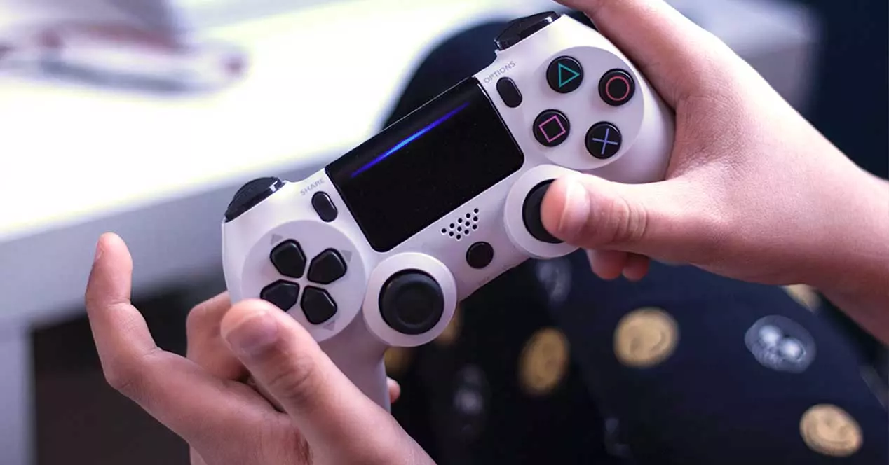
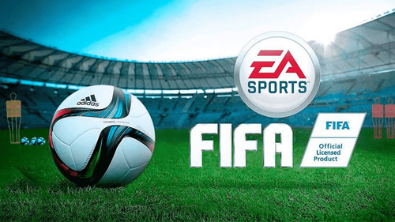
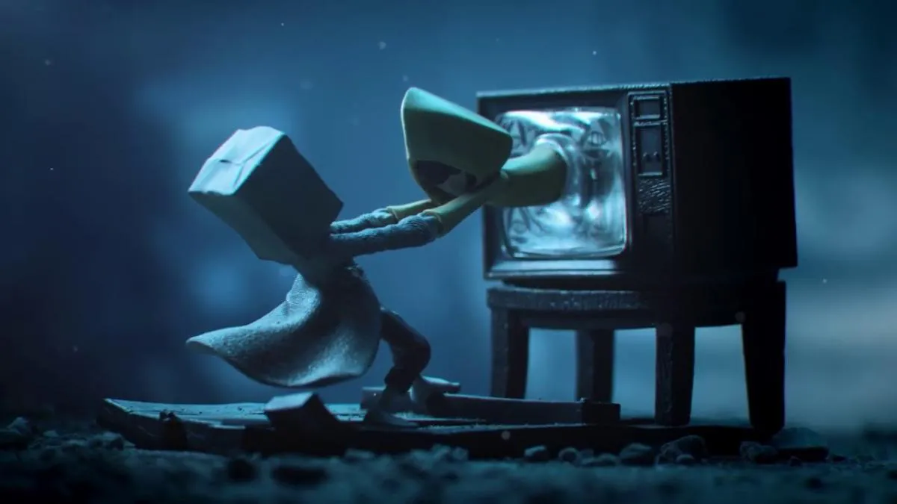

Nosotros
Contactos
Noticias
Teorías y curiosidades

5 Beneficios de jugar videojuegos
Teoría de las etapas del duelo en Majora's Mask
Los videojuegos más esperados para 2022 retrasados a 2023
15 Curiosidades de Undertale
Los 10 lanzamientos más esperados de Junio 2022

FIFA cambia de Nombre a EA Sports FC en 2023
Wanted: Dead, presenta un nuevo tráiler

Final de Little Nightmares 2 ¿Qué paso en verdad?